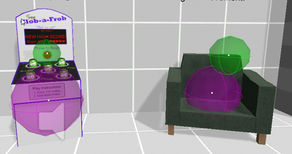
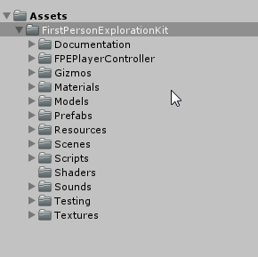
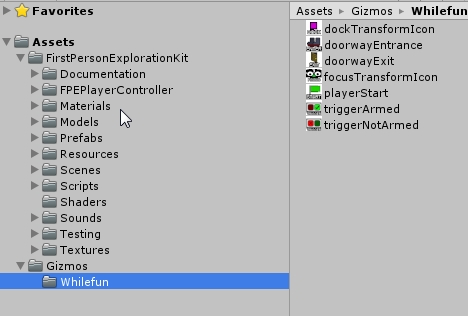
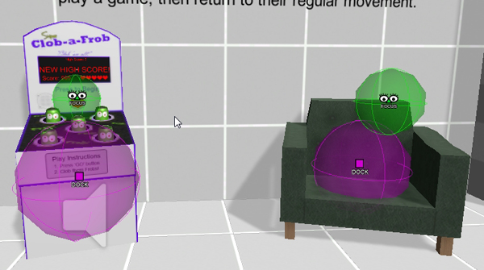

First Person Exploration Kit: Gizmo Icons
Gizmo Icons
Inside the FirstPersonExplorationKit folder is a sub folder called "Gizmos". This folder contains icons that are used in drawing gizmos for some of the object types that come with the kit.
Without access to the Gizmo Icons, the gizmos will just have shapes and colors, as shown below

Moving the Gizmos Folder
To move the Gizmos Folder:
- Open the FirstPersonExplorationKit folder

- Select the Gizmos sub-folder
- If you already have a Gizmos folder, copy the FirstPersonExplorationKit\Gizmos\Whilefun folder into your existing Gizmos folder.
- If you do not already have a Gizmos folder, copy the enture FirstPersonExplorationKit\Gizmos folder into your main Assets folder.

Now your Gizmos will draw with helpful icons, as shown below:
